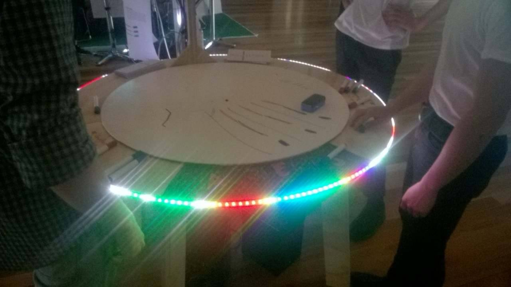

At Broken Chords, we believe that musical creation should be for everyone, not just those who have trained their whole life. Over the past few months we have created a platform that allows those that have never seriously attempted to create music before to express themselves, begin to make music, and understand the ways in which music is constructed. The platform is designed to invite a creative and collaborative environment for music, where people can learn from each other as they explore at their own pace. The platform requires very little technical skill to utilise it to its full potential. This casual user driven approach to learning music will allow anyone to learn music. Augmented Reality Teaching Everyone Music In Society ARTEMIS is a round table with a whiteboard surface, that people can interact with through drawing with markers. ARTEMIS will create and play music based on these drawings, taking into account colour and position. People can draw from all sides of the table, so multiple people can work together to create a single piece. Artemis invites an explorative and collaborative environment where people can learn basic compositions of music together while creating a piece.
 How It WorksHow It Works ARTEMIS is a round table with a whiteboard surface, that people can interact with through drawing with markers. ARTEMIS will create and play music based on these drawings, taking into account colour and position. People can draw from all sides of the table, so multiple people can work together to create a single piece. Artemis invites an explorative and collaborative environment where people can learn basic compositions of music together while creating a piece.